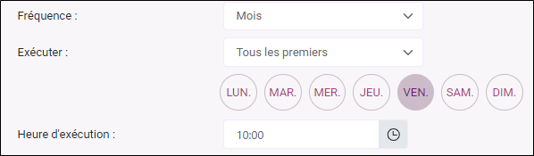

Mettre en place des alertes automatiques
La fonctionnalité Alerte automatique vous permet de surveiller l’évolution d’un indicateur sans avoir à effectuer de vérifications manuelles régulières. Elle permet d’être automatiquement averti lorsqu’un indicateur clé présente une variation significative à la hausse ou à la baisse, entre deux périodes d’analyse définies. Cette détection rapide facilite l’identification d’éventuelles ruptures de tendance ou anomalies, vous aidant ainsi à réagir plus rapidement.
Accès rapide aux sections
Créer une alerte automatique
Pour créer une alerte automatique, procédez comme suit :
-
Depuis la partie Questionnaire, cliquez sur Alertes dans le menu latéral.
-
Cliquez sur Créer une alerte.
-
Définissez le nom de l'alerte ainsi que sa période de validité en renseignant les champs Démarrer le / Arrêter le.
Si vous ne souhaitez pas fixer de date de fin, décochez la case Arrêter le.
-
Définissez les conditions de déclenchement de l'alerte :
-
Sélectionnez la variable sur-laquelle l'alerte doit se baser ainsi que l'indicateur à utiliser depuis le champ Indicateur.
Indicateurs disponibles selon le type de la variable sélectionnée : Moyenne, Médiane, Score NPS, Réponses effectives.
-
Définissez la condition en sélectionnant un critère selon un seuil fixe ou selon une évolution puis indiquez une valeur :
-
 Seuil fixe
Seuil fixe
-
Supérieur à ;
-
Supérieur ou égal à ;
-
Inférieur à ;
-
Inférieur ou égal à.
-
-
Évolution
-
En hausse (pts) ;
-
En baisse (pts) ;
-
En hausse ou en baisse (pts) ;
-
En hausse (%) ;
-
En baisse (%) ;
-
En hausse ou en baisse (%).
-
-
-
Sélectionnez la période sur laquelle les conditions de déclenchement doivent se baser :
-
Sur l'ensemble des données ;
-
Sur une période glissante en définissant le nombre des x derniers jours et la variable sur-laquelle se baser.
Pour un critère selon une évolution, vous devez également sélectionner la période de comparaison. Celle-ci peut être :
-
Sur l'ensemble des données ;
-
Sur une période glissante, en définissant le nombre des x jours précédents.
REMARQUE : La période de comparaison est la période immédiatement antérieure à la période d'analyse.
REMARQUE : Il est possible d’ajouter un seuil minimal de réponses nécessaires pour déclencher l’alerte. Pour cela, cochez "Seuil minimal de nombre de réponses" puis indiquez une valeur. Ce seuil s'applique à toutes les périodes définies.
Si nécessaire, vous pouvez restreindre l’alerte à un profil spécifique, cochez l'option Restreindre l'alerte à un profil puis cliquez sur Sélection pour choisir le profil concerné.
EXEMPLE : Nous souhaitons être notifiés dès que la moyenne de satisfaction des personnes ayant séjourné à l’hôtel passe en dessous de 9.
-
-
-
Définissez la fréquence de vérification et d'envoi :
-
Rythme de vérification : sélectionnez la fréquence d'exécution parmi Heures / Jours / Semaines / Mois puis configurez les options correspondantes :
-
Pour une fréquence en Heures / Jours : indiquez une valeur dans le champ Exécuter tous les.
-
Pour une fréquence en Semaines : sélectionnez les jours de la semaine à utiliser pour la vérification puis définissez l'heure d'exécution.
EXEMPLE : La vérification sera effectuée chaque semaine, les lundis et jeudis, à 10:00.

-
Pour une fréquence en Mois, plusieurs options sont possibles :
Le même jour du mois :
La vérification sera effectuée le x de chaque mois à x heure (la date est à définir dans le champ Chaque et l'heure à définir dans le champ Heure d'exécution).
Tous les premiers :
La vérification sera effectuée tous les premiers (jour de la semaine à définir) du mois à x heure (l'heure à définir dans le champ Heure d'exécution).
EXEMPLE : La vérification sera effectuée tous les premiers vendredis du mois, à 10:00.

Tous les derniers :
La vérification sera effectuée tous les derniers (jour de la semaine à définir) du mois à x heure (l'heure à définir dans le champ Heure d'exécution).
Le premier jour du mois :
La vérification sera effectuée le premier jour de chaque mois à x heure (l'heure à définir dans le champ Heure d'exécution).
Le dernier jour du mois :
La vérification sera effectuée le dernier jour de chaque mois à x heure (l'heure à définir dans le champ Heure d'exécution).
-
-
-
Sélectionnez l'adresse d'expéditeur à utiliser et définissez le nom d'expéditeur.
-
-
Sélectionnez la langue du message à envoyer.
Un message par défaut est envoyé aux destinataires. Il contient le nom de l'étude, nom de l'alerte, ainsi que la date et les conditions de déclenchement.
Si vous souhaitez personnaliser l'objet et le contenu du message, cliquez sur Message personnalisé.
REMARQUE : Le contenu des champs de fusion présents dans le message personnalisé s'affiche dans la langue sélectionnée à l'étape précédente.
Pour rétablir le message par défaut, cliquez sur Réinitialiser l'objet et le contenu de l'email par défaut.
-
Cliquez sur Enregistrer.


Si, lors d'une vérification, les conditions définies sont remplies, un message automatique est envoyé aux adresses renseignées.

Exemples de configuration des conditions de déclenchement d’une alerte
Les exemples ci-dessous illustrent différentes configurations possibles d’alertes automatiques selon le type de condition, la période d’analyse et les indicateurs utilisés.
Exemple 1 — Seuil fixe : détection d’un taux de satisfaction faible (sur l'ensemble des données)
EXEMPLE : Vous souhaitez être averti si la satisfaction concernant la propreté de la chambre devient trop faible.
Configuration de l'alerte :
- Variable analysée : Propreté de la chambre
- Indicateur : Moyenne
- Condition : Inférieur à 7.5
- Période d'analyse : ensemble des données
L’alerte se déclenche si la moyenne calculée pour la variable Propreté de la chambre, sur l’ensemble des données définies pour l’alerte, devient inférieure à 7,5.
Exemple :
- Moyenne actuelle sur l’ensemble des données : 7,2
→ La moyenne étant inférieure à 7,5, l’alerte est déclenchée.
Exemple 2 — Seuil fixe : détection d’une satisfaction faible sur une période glissante
EXEMPLE : Vous souhaitez être averti si la satisfaction concernant la qualité de l’accueil devient trop faible sur une période récente.
Configuration de l'alerte :
Variable analysée : Qualité de l’accueil
Indicateur : Moyenne
Condition : Inférieur à 8
Période d’analyse : 10 derniers jours (période glissante)
Sur la base de la variable : Date d'enregistrement de la réponse
L’alerte se déclenche si la moyenne calculée pour la variable Qualité de l’accueil, sur les 10 derniers jours sur la base de la variable Date d'enregistrement de la réponse, est inférieure à 8.
Exemple :
Moyenne du 5 au 14 mai : 7,6
La moyenne étant inférieure à 8, l’alerte est déclenchée.
Exemple 3 — Évolution : détection d’une baisse rapide de satisfaction (période glissante)
EXEMPLE : Vous souhaitez être averti si la moyenne de satisfaction diminue fortement sur une courte période.
Configuration de l’alerte :
- Variable analysée : Satisfaction globale de séjour
- Indicateur : Moyenne
- Condition : En baisse de 1 point
- Période d’analyse : 7 derniers jours (période glissante)
- Sur la base de la variable : Date de séjour
- Période de comparaison : 7 jours précédents
L’alerte se déclenche si la moyenne calculée pour la variable Satisfaction globale du séjour, sur les 7 derniers jours sur la base de la variable Date de séjour, est inférieure d’au moins 1 point à celle calculée sur les 7 jours précédents.
Exemple :
- Moyenne du 1 au 7 mars : 8,6
- Moyenne du 8 au 14 mars : 7,4
→ La baisse est de 1,2 point : l’alerte est déclenchée.
Exemple 4 — Évolution : détection d’une hausse du NPS
EXEMPLE : Vous souhaitez être informé lorsqu’une amélioration significative du Score NPS est observée.
Configuration de l’alerte :
- Variable analysée : Recommanderiez-vous cet hôtel à un proche ?
- Indicateur : Score NPS
- Condition : En hausse de 10 %
- Période d’analyse : 30 derniers jours
- Sur la base de la variable : Date de séjour
- Période de comparaison : 30 jours précédents
L’alerte se déclenche si le Score NPS calculé sur la variable Recommanderiez-vous cet hôtel à un proche ?, pour les 30 derniers jours sur la base de la variable Date de séjour, est supérieur d'au moins 10 % à celui des 30 jours précédents.
Exemple :
- NPS du mois précédent : 40
- NPS des 30 derniers jours : 46
→ Le NPS a augmenté de 15 % : l’alerte est déclenchée.
Éditer, dupliquer ou supprimer une alerte automatique
Vous pouvez à tout moment modifier, dupliquer ou supprimer une alerte, notamment pour l’activer ou la désactiver, en cliquant sur les icônes correspondantes dans la colonne Actions de la liste des alertes.

Consulter l'historique des alertes
Pour accéder à l'historique des alertes,
-
Depuis la partie Questionnaire, cliquez sur Alertes puis sur Historique alertes dans le menu latéral.
Un tableau s’affiche avec le nom de l’alerte, la date de déclenchement ainsi qu’un résumé.
Vous pouvez filtrer cette liste et l’exporter au format Excel.